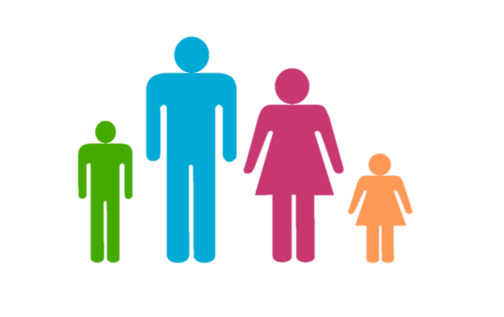

Présentation de notre sujet
Nous sommes des étudiantes en Master 1 Traitement automatique des langues (TAL) et dans le cadre de notre cours de programmation et projet encadré, nous devions par groupe choisir un thème et l'étudier dans différentes langues à l'aide d'un corpus issu de sites internet et de différents outils d'analyse informatique.
Dans ce site nous allons vous présenter nos travaux sur la notion de "Famille" dans trois langues différentes : en français, en anglais et en chinois.
Nous avons choisi ce sujet car nous pensions que cela pouvait être intéressant d'étudier les différentes visions que nous pouvions avoir selon nos cultures et nos politiques, comme par exemple à travers la politique de l'enfant unique en Chine ou le combat dans les pays occidentaux pour certains droits comme l'IVG ou l'adoption pour des couples homosexuels qui peuvent bouleverser quelques idées sur la notion de famille.

|
|
|
|
Méthode
Ce projet nous a permis d'avoir une première approche avec le langage informatique bash, ainsi que quelques outils d'analyse tel que le Trameur.
|
|
|
|
Sur Nous
Ce projet a été fait par trois étudiantes en première année de master en Traitement automatique des langues (TAL) :
- BELLATO Sandra (Sorbonne nouvelle) pour la partie anglaise de l'analyse.
- LI Yixuan (Paris X) pour la partie chinoise de l'analyse.
- ZHANG Yunbei (Sorbonne nouvelle) pour la partie française de l'analyse.

|
|